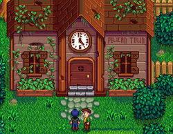
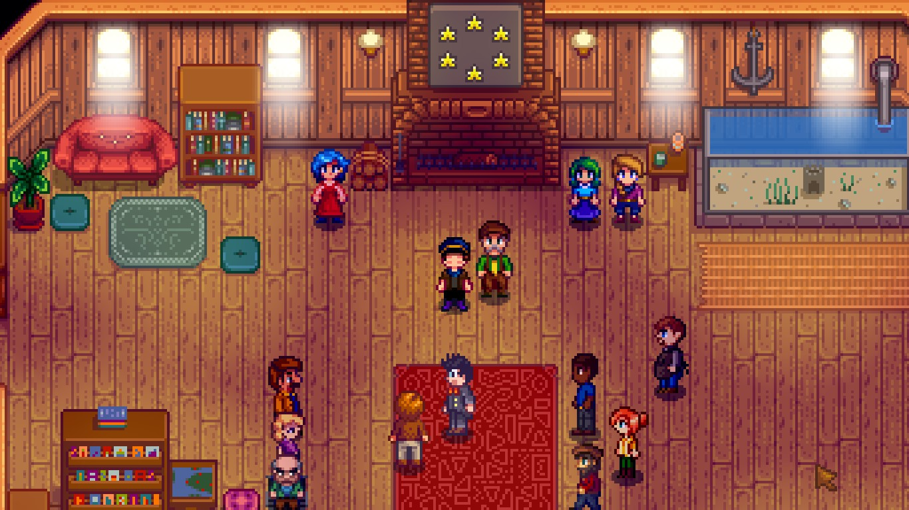

¿Que es el centro cívico?
El centro cívico es uno de los muchos objetivos del juego. En este lugar deberas ir completando pequeños retos del juego que involucran todos los aspectos del juego (Mina, agricultura, pesca, ganaderia y artesania)
Cuando completas todos los retos este se arregla y deja de estar en ruinas ademas de darte un logro en steam y amistad para todos los aldeanos
